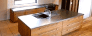
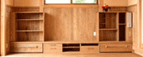
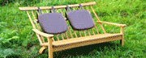
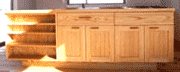
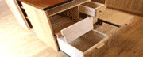
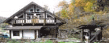
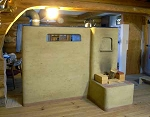

木にこだわるの木製キッチン、オーダーキッチン、オーダー家具ってどんなもの?
|
キッチン特集 さまざまな木製キッチン |
|
施工例 でき上がった様子を拝見 |
|
テーブル 椅子 さまざまなオーダー家具をご覧ください |
|
木製キッチンのこだわり |
|
|

|
注文の方法を見てみましょう |
|
木製キッチンはどのようにして作られる？ |
What's New
2012年1月 ロケッロットストーブを作りました。
ロケットストーブ作りは、ロバの家具やのブログの中でも紹介しています。
ぜひのぞいてみてください。
2012年1月 空飛ぶ泥船ワークショップの様子をUPしました。
藤森照信先生設計の茶室 ”空飛ぶ泥船"の製作の様子を紹介します。
2010.11.07 ブログを始めました。日々の出来事をつづります。
ロバの家具やのブログ
2010.07.27 庭の雑記帳をリニューアルしました
INDUSTRIAL ARIA
昨年私の兄が、工場地帯の写真集「INDUSTRIAL AREA」を出版しました。
個人出版という形で、1000部を発行しました。
詳しくは 兄のこだわり写真のサイト 「絵はがき的風景写真ギャラリ－」へ
また、最新の写真は ブログ「光る工場地帯」もご覧ください。 写真集ご購入の際はこちらまで